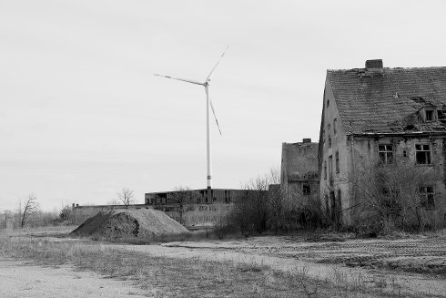

{kind=link}
Heimat ist ein Raum aus Zeit

Thomas Heise
|
DE
/ AT 2019 | 218 min Goldene Sesterze, Nyon Caligari-Filmpreis, Forum Berlinale www.heise-film.de
|
donnerstag | 30 mai 19.00 |
filmmuseum münchen
HEIMAT IST EIN RAUM AUS ZEIT ist eine Chronik aus textlichen Hinterlassenschaften der Familie des Filmemachers, Sohn des Philosophen Wolfgang Heise, dieser wiederum bekannt mit Wolf Biermann, Heiner Müller und Christa Wolf. Ein Erinnerungssog aus Worten, Filmaufzeichnungen und Fotos, komponiert aus den Zeugnissen von vier Generationen. Erzählt wird von der Liebe, den politischen Idealen und Umbrüchen des 20. Jahrhunderts.
Der Film ist ein an die Tagebücher Victor Klemperers gemahnender monumentaler Erinnerungssog, der bis in die Zeit vor dem ersten Weltkrieg zurückreicht. In Briefen wird die Genealogie der Familie des Filmemachers vor dem Hintergrund der politischen Ereignisse und des kulturellen und geistigen Lebens der DDR nachgezeichnet.
"Die (ostdeutsche) Heimat zeigt sich zugleich verloren und gebunden an ihre Vergangenheit, kaum ist sie im Hier und Jetzt verortbar. Heimat ist bei Heise als Topographie der Geschichte und als stummer Zeuge der Umwälzungen zu denken, in denen sich die private mit der politischen Geschichte vereint. Der Film erzählt keine Geschichte nach. Stattdessen: entsteht die Ahnung von dem, was Biographie heißen könnte." (Dunja Bialas)
Thomas Heise (*1955 in Berlin, DDR), Autor, Dokumentarfilm- und Theaterregisseur, wurde als Chronist der deutsch-deutschen Wendezeit bekannt. Unter seinen essayistischen Dokumentarfilmen finden sich Momentaufnahmen, die die kontro- verse politische Stimmung des wiedervereinigten Landes einfangen (DER IMBISS 1990, STAU 1992), und große Würfe, die in einem unverwechselbaren Stil die Gegenwart mit politischen Zuständen der deutschen Geschichte (VATERLAND 2002) oder die Zeitgeschichte mit dem kulturellen Leben der DDR verbinden (MATERIAL 2009). Bereits mit sei- nem frühen Werk WOZU DENN ÜBER DIESE LEUTE EINEN FILM? (1980), das er während seines (abgebrochenen) Studiums an der HFF Potsdam realisierte, bewies Heise ein Gespür für unterrepräsentierte Realitäten und verborgene Narrative. |
| Filme Wozu denn über diese Leute einen Film 1980 | Das Haus 1984 | Imbiß Spezial 1989/90 | STAU – Jetzt geht’s los 1992 | Neustadt (Stau – Der Stand der Dinge) 1999 / 2000 | Vaterland 2002 | Im Glück (Neger) 1999/2006 | Kinder. Wie die Zeit vergeht 2007 | Material 2009 | Sonnensystem 2011 (6. UX) | Gegenwart 2012 | Städtebewohner 2014 | Heimat ist ein Raum aus Zeit 2019 |